Proyecto académico | Entrega final | 16 de noviembre de 2026
Tecnologías: HTML, CSS y JavaScript; Node.js, Express; MongoDB Atlas y Mongoose; autenticación JWT.
Integrantes y matrículas: Pendiente de completar por el equipo antes de entregar.
Easy Locker permite a estudiantes crear una cuenta, consultar disponibilidad de casilleros universitarios, elegir un plan, registrar una reserva y confirmar un pago simulado. El usuario puede consultar su historial y un código demostrativo. Un administrador puede gestionar diez colecciones y consultar cuatro reportes.
Importante: el pago no cobra dinero real y el código no acciona cerraduras físicas. El frontend y el backend se ejecutan localmente; la base de datos está alojada en MongoDB Atlas. El proyecto no está publicado como aplicación web en Internet.
Navegador (HTML/CSS/JS) → API REST (Node.js + Express) → ODM Mongoose → MongoDB Atlas (base easy_locker).
El navegador envía y recibe JSON mediante fetch; no tiene acceso directo a MongoDB. El backend valida entradas, comprueba referencias y roles, y registra eventos. Las contraseñas se almacenan como hashes bcrypt; los endpoints privados requieren Authorization: Bearer <token>.
Autenticación: POST /api/registro y POST /api/login son públicos. Las demás rutas funcionales requieren JWT. Los endpoints /api/admin requieren además rol administrador.
La base easy_locker contiene diez colecciones con documentos identificados por ObjectId:
| Colección | Función | Referencias |
|---|---|---|
| roles | Tipos de usuario | — |
| facultades | Facultades disponibles | — |
| usuarios | Cuentas, matrícula y hash | rol → roles; facultad → facultades |
| edificios | Edificios universitarios | facultad → facultades |
| pisos | Niveles por edificio | edificio → edificios |
| casilleros | Inventario, ubicación y estado | piso → pisos |
| planes | Precio, duración y moneda | — |
| rentas | Reservas, periodos y estados | usuario → usuarios; casillero → casilleros; plan → planes |
| pagos | Confirmaciones simuladas | renta → rentas |
| logs_sistema | Auditoría y errores | usuario → usuarios (opcional) |
Relaciones principales: facultad → edificio → piso → casillero; usuario + casillero + plan → renta → pago. Las referencias usan ObjectId y validaciones en el backend. Existen índices únicos de nombres, correos, matrículas y combinaciones de ubicación.
Estados de casillero: disponible, reservado, ocupado, mantenimiento, inactivo. Estados de renta: pendiente_pago, activa, finalizada, cancelada, vencida.
Inicialización: ejecutar npm run seed crea las colecciones, índices y datos base. Se cargaron 2 roles, 4 facultades, 6 edificios, 18 pisos, 864 casilleros y 2 planes; el seed es idempotente.
| Método | Endpoint | Función |
|---|---|---|
| POST | /api/registro | Crear cuenta de estudiante |
| POST | /api/login | Autenticar y emitir JWT |
| POST | /api/logout | Registrar cierre de sesión |
| GET | /api/estado | Estado del backend y base |
| GET, PUT | /api/yo | Consultar o actualizar perfil |
| GET | /api/casilleros?facultad=...&edificio=...&piso=... | Disponibilidad filtrada |
| GET | /api/planes | Planes activos |
| POST, GET | /api/rentas | Crear y listar reservas propias |
| POST | /api/rentas/:id/pagar | Confirmar pago simulado |
| POST | /api/rentas/:id/cancelar | Cancelar reserva pendiente |
| GET | /api/mi-acceso | Código demostrativo de renta activa |
| GET | /api/admin/resumen | Indicadores generales |
| GET | /api/admin/reportes/ocupacion | Ocupación por ubicación |
| GET | /api/admin/reportes/ingresos-mensuales | Ingresos por mes y facultad |
| GET | /api/admin/reportes/rentas-por-plan | Rentas e ingresos por plan |
| GET | /api/admin/reportes/historial-rentas | Historial cruzado |
| GET, POST | /api/admin/:resource | Listar o crear documentos |
| PUT, DELETE | /api/admin/:resource/:id | Editar o eliminar documentos |
Los valores admitidos de resource son roles, facultades, usuarios, edificios, pisos, casilleros, planes, rentas, pagos y logs. Los endpoints administrativos son exclusivos del rol administrador.
Ejemplo de autenticación: POST /api/login con JSON {"correo":"usuario@ejemplo.com","contrasena":"[contraseña]"} devuelve un token. No incluir tokens ni contraseñas reales en la documentación ni en GitHub.
Los cuatro reportes se implementan con agregaciones MongoDB, incluyendo operaciones $lookup, agrupación y proyección. El backend comprueba JWT, permisos, referencias válidas, campos obligatorios, enums y restricciones de unicidad. El borrado de entidades relacionadas se bloquea para proteger integridad referencial.
Las operaciones importantes, errores y eventos de inicio/cierre se registran en logs_sistema y logs/backend.log. Este archivo no debe publicarse.
Accede a http://localhost:3000. Utiliza la navegación para consultar casilleros, planes, historial y cuenta. Si todavía no tienes usuario, dirígete a Registro.
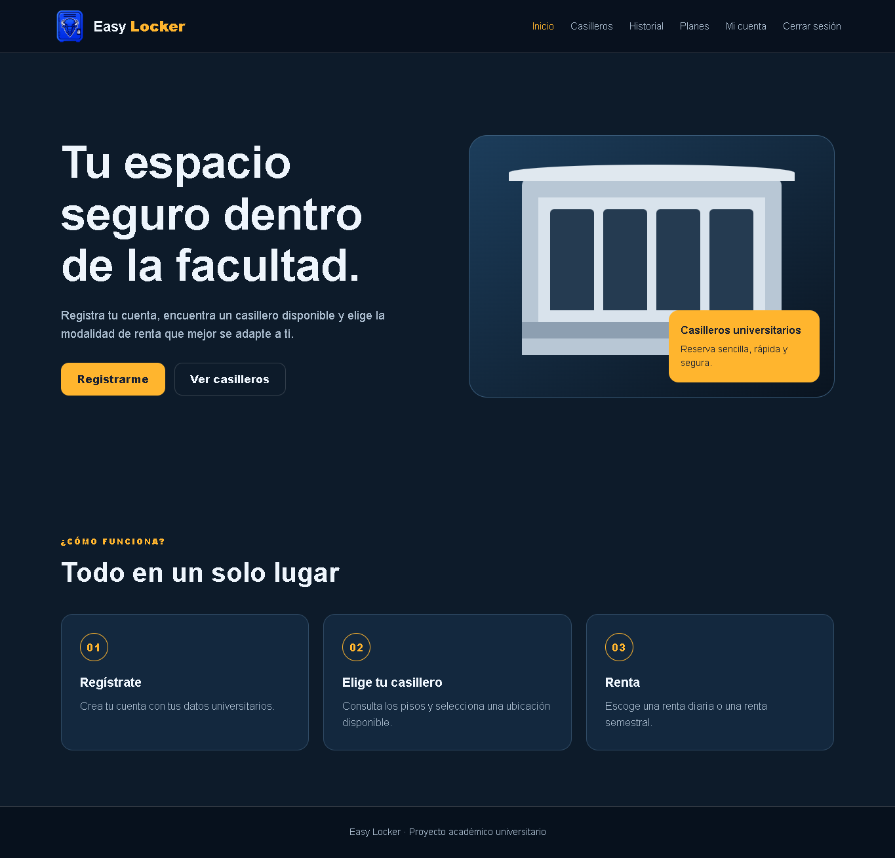
Completa nombre, apellidos, matrícula, correo, facultad y contraseña. Envía el formulario; después inicia sesión con el correo registrado. El backend verifica los datos y la existencia de la facultad.
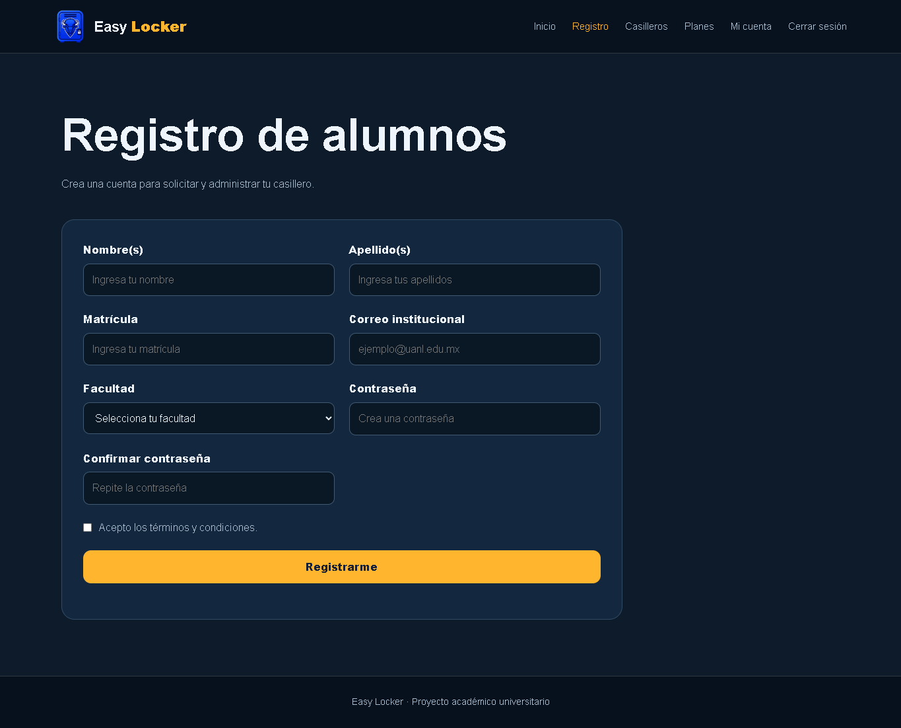
Introduce correo y contraseña. La aplicación guarda temporalmente el token de sesión en el navegador y lo utiliza para solicitar recursos protegidos. Para cerrar sesión utiliza la opción correspondiente en la interfaz.
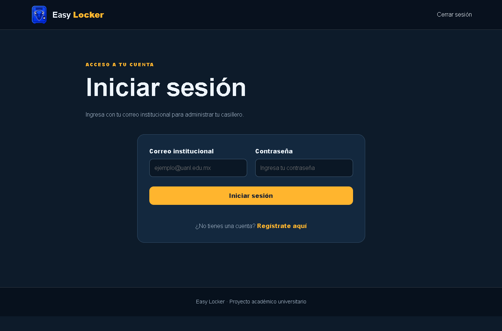
Selecciona facultad, edificio y piso. Observa el mapa de casilleros y elige uno disponible. Los ocupados o no disponibles no pueden reservarse. La selección se usa en el proceso de renta.
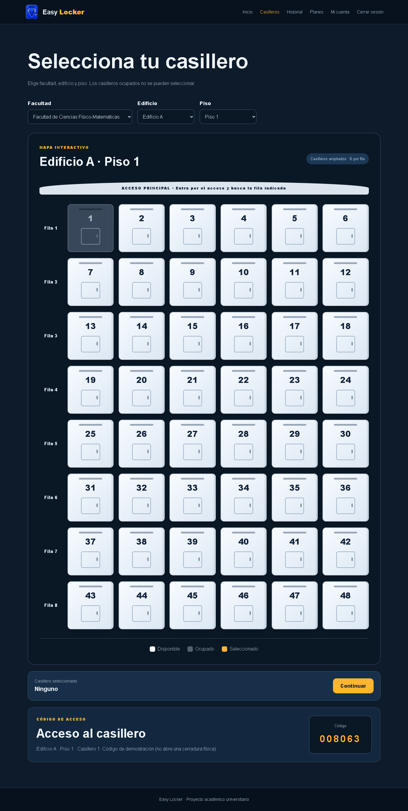
Revisa la renta diaria y la semestral, sus precios y condiciones. Elige Suscribirse para continuar con el plan. Los precios definitivos de la operación se consultan desde la API.
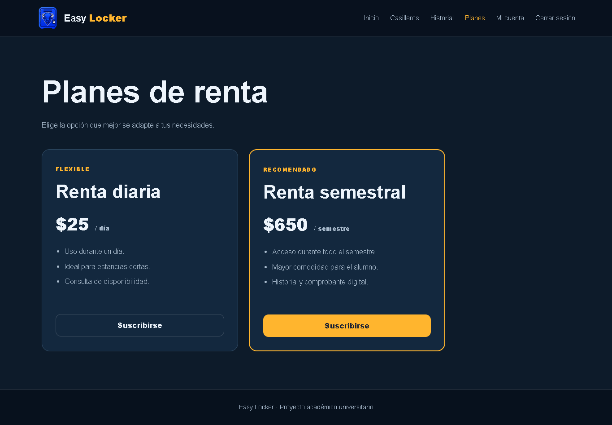
Comprueba el resumen de plan y casillero. Pulsa Confirmar pago simulado para activar la reserva. No introduzcas información bancaria: la pantalla no procesa pagos reales. Una reserva pendiente caduca a los 15 minutos.
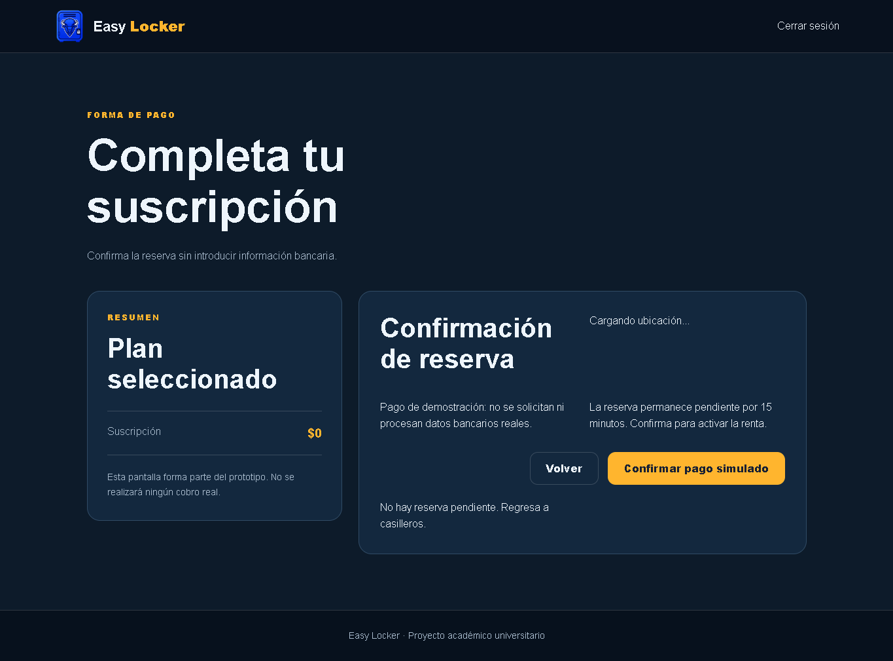
Consulta nombre, correo, facultad, casillero y plan. Cuando hay una renta activa se muestra un código demostrativo de seis dígitos. El formulario de la misma página permite actualizar los datos personales.
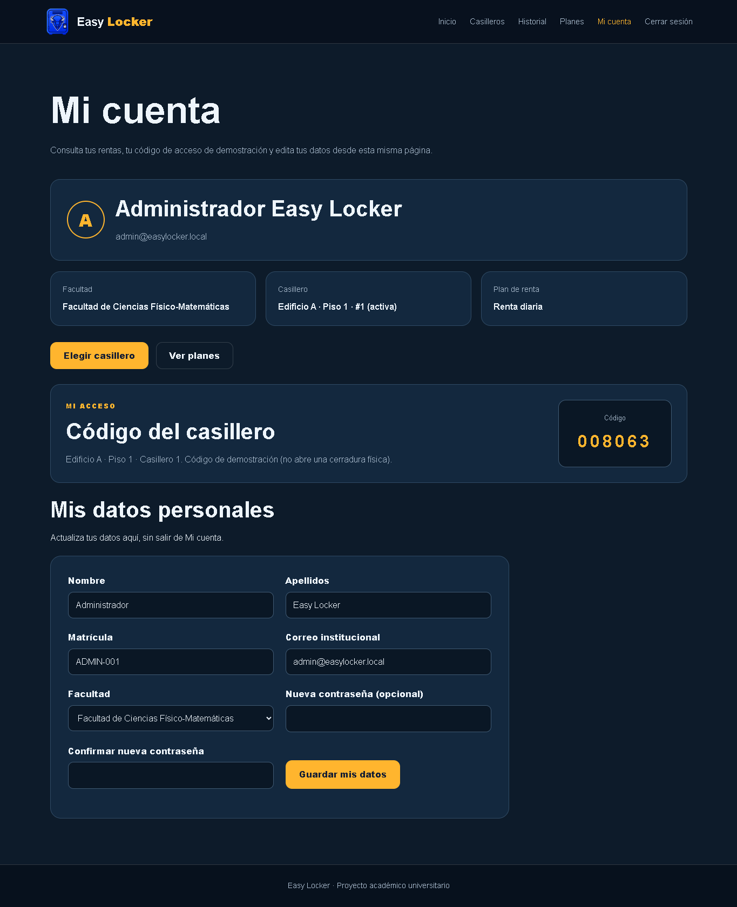
Consulta las rentas registradas, su estado, ubicación, plan y fechas. El resumen muestra la renta actual y el total de rentas.
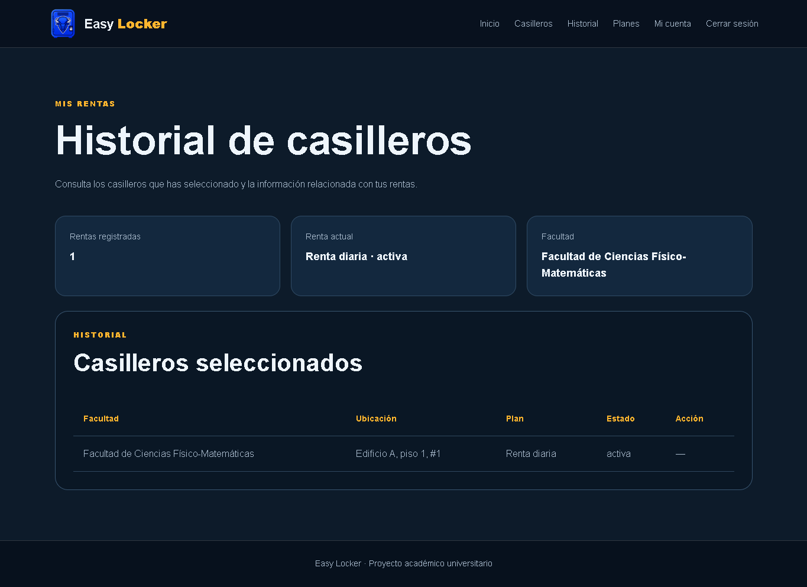
Inicia sesión con una cuenta de rol administrador. Abre Admin.html. El panel muestra casilleros, disponibles, usuarios, rentas e ingresos simulados.
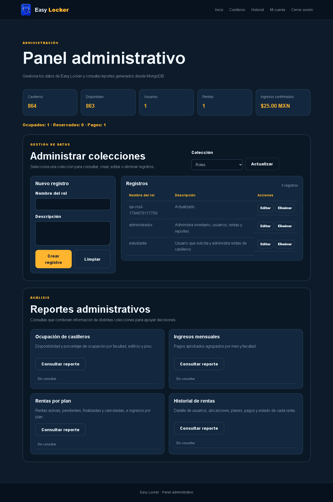
La interfaz incluye navegación adaptable. Se verificó la carga de las nueve páginas a una anchura simulada de 390 píxeles y no se detectaron errores JavaScript ni desbordamiento horizontal.
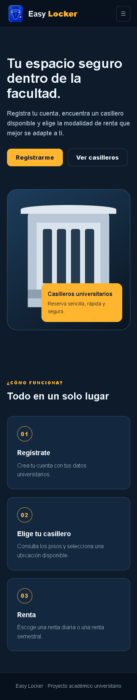
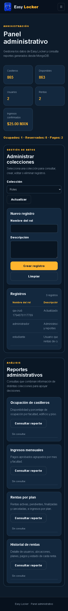
npm install..env a partir de .env.example y configurar la URI privada de MongoDB Atlas, secretos JWT y credenciales administrativas.npm run seed.npm start y abrir http://localhost:3000.npm test y npm run test:crud para comprobar integración y CRUD.Seguridad: no compartir .env, atlas-credentials.env, contraseñas ni tokens. Los archivos de credenciales están excluidos de Git.
La aplicación funciona con Atlas y se aprobaron las pruebas automatizadas de integración. Sigue pendiente la validación del profesor sobre el uso de Mongoose (ODM) frente a la exigencia textual de ORM, y sobre models.js + seed.js como equivalente del script SQL solicitado. También debe completarse la lista de integrantes y verificar el historial de commits/ramas en GitHub.
Capturas: generadas con navegador Microsoft Edge en modo automatizado sobre la versión local. Algunas pantallas pueden mostrar datos de demostración o estados vacíos; no representan cobros reales.